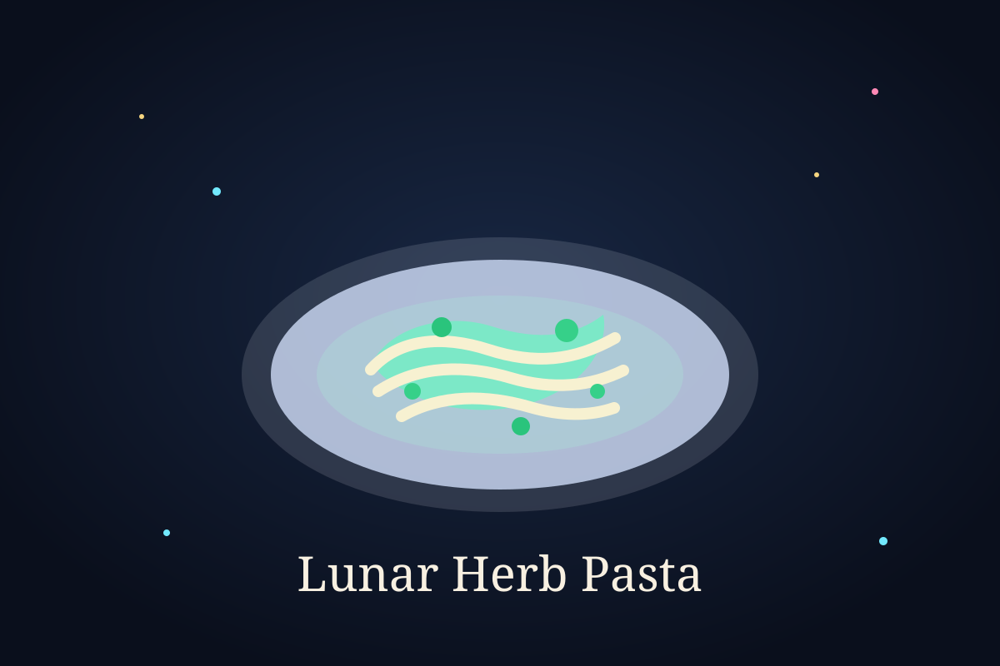
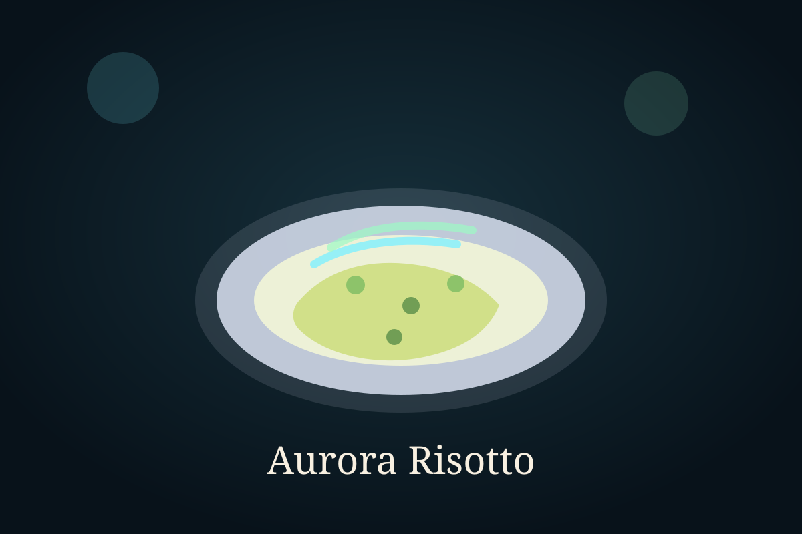
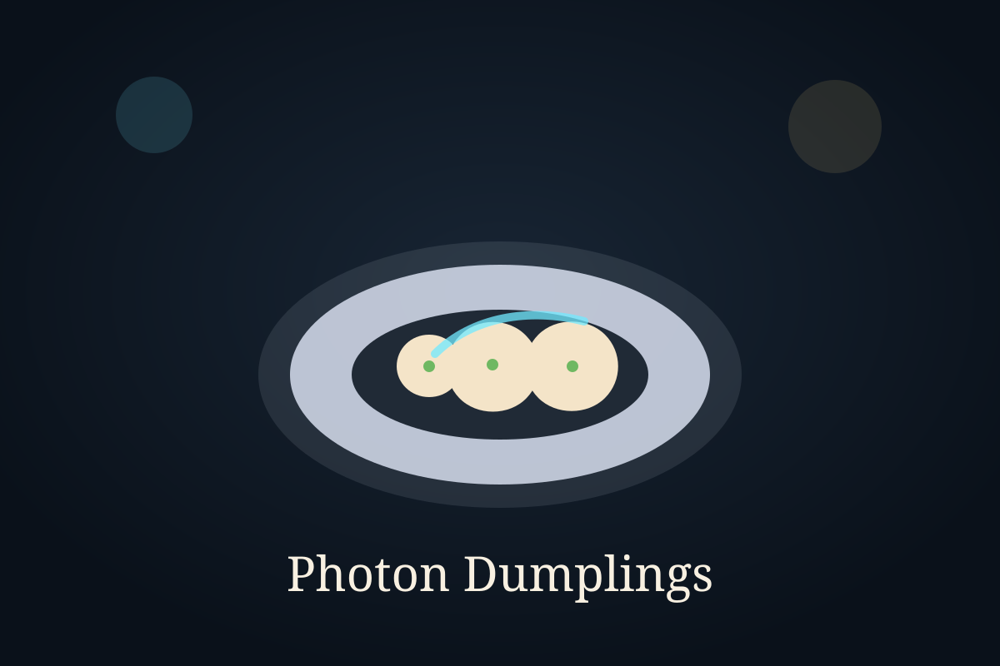
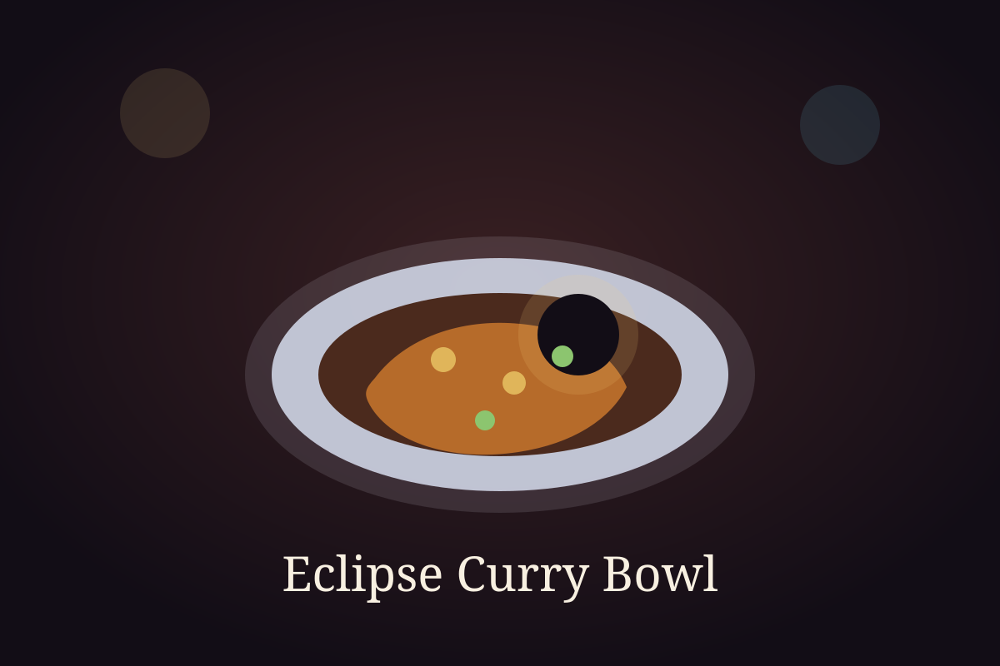

Recipe Count
8
Recipe Explorer
Choose another linked category from the dropdown.

Celestial Savory
A creamy pasta with garlic, basil, spinach, and moonlit herb flavor.

Solar Heat
A bright tomato-lentil soup powered by roasted vegetables and warm spices.

Fresh Orbit
A crisp salad with cucumber, apple, greens, feta, and a glowing citrus dressing.

Quick Weeknight
A fast garlic-chili noodle bowl with crunchy vegetables and a glossy sauce.

Celestial Savory
A creamy mushroom risotto with spinach, parmesan, and a glowing aurora finish.

Handcrafted Bites
Soft vegetable dumplings with sesame, garlic, and a brighter high-skill edge.

Share Plate
A crisp flatbread topped with cheese, peppers, onion, and scattered star-like color.

Solar Heat
A rich chickpea curry with coconut milk and rice in a dark-gold eclipse palette.